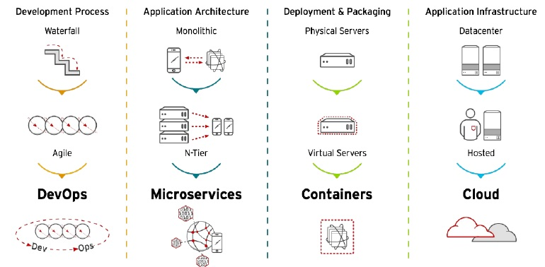
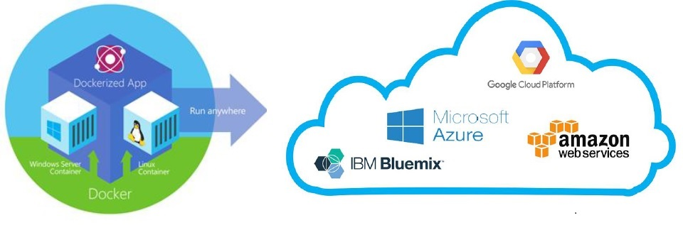

Présentation : Docker
1. Introduction
Dans cette présentation, je vous donnerai des réponses aux questions suivantes :
- Conteneurs Linux LXC et Conteneurs Docker: Quelle(s) différence(s)?
- Pourquoi utiliser des conteneurs plutôt que des Machines Virtuelles?
- Pourquoi utilise-t-on Docker et quelles sont ses atouts dans le développement et le déploiement des applications cloud-native?
- Conteneurs, sont-ils vraiment populaires dans les Data Center / Cloud Computing?
- Docker, Cloud, DevOps et microservices, quel lien?
PS : les chapitres 1 & 2 ne contiennent que des explications visuelles, la rédaction commence à la fin du chapitre 2.
Big Picture ...

Infrastructure IT: Changement de vitesse

Docker (utilisation 2021)

Adoption de la Technologie Conteneur Docker

La Technologie Conteneur révolutionne le Cloud

Docker = La voie vers DevOps

DevOps = Intégration Continue & Déploiement Continu (CI/CD)
2. Le Challenge
Services ET Environnements multiples : Comment déployer?

Produits ET Moyens multiples = Comment transporter?

Usage des conteneurs = Portabilité


Qu’est ce qu’un Conteneur ?
-
Un processus s’exécutant sur son propre système de fichiers
- Vision limitée du système sur lequel il tourne
- Optimisation de l'usage des ressources
- Le noyau quant à lui, est partagé avec le système hôte.
-
Dérivé du principe de CHROOT (sous Unix) et de mécanisme d’isolation de système de fichiers
-
Une application packagée dans un Rootfs
-
Un Rootfs (le / d'un Linux) qui est appelé image contient :


3. Conteneur Linux LXC
LXC : C’est quoi?
- La virtualisation par conteneurs se base sur la virtualisation Linux LXC, pour Linux Containers.
- Il s’agit d’une méthode de cloisonnement au niveau de l’OS.
- LXC est utilisé pour faire fonctionner plusieurs instances Linux isolés les uns des autres dans des conteneurs partageant le même noyau et une petite partie du système hôte.
Chroot par rapport à LXC
-
Chroot est moins sécurisé :
- Un conteneur chrooté partage son /proc et son /dev avec l'hôte, et il a donc tout liberté pour s'introduire dans le système
-
Chroot donne une isolation moins faible :
- Même si le système de fichier d’un conteneur est correctement isolé, les processus (liés aux services qui tournent dedans) ne sont pas isolés (ils peuvent voir ceux de l’hôte)
- Les services d’un conteneur écoutent sur la même interface réseau
- Il n'est pas pratique du tout dés qu'il s'agit de faire tourner plein de services dans le conteneur
-
LXC offre un jeu de nouvelles techniques d’isolation dans le kernel permettant de créer facilement un super-chroot beaucoup plus isolant que la version d'origine.
LXC : Technologies de base
- LXC repose sur la notion de groupes de contrôle Linux (cgroups) disponibles depuis sa version 2.6.24
- Chaque groupe de contrôle permet de limiter et d’isoler l’utilisation des ressources qu’un processus peut utiliser (processeur, mémoire, réseau, système de fichier et accès E/S), et ce sans recourir à des machines virtuelles à part entière.
- LXC repose aussi sur une isolation des espaces de nommage du noyau (namespace):
- Permet d’empêcher qu’un groupe puisse « voir » les ressources des autres groupes (systèmes de fichiers, les ID réseau et les ID utilisateur)
- LXC repose sur les bibliothèques Profils Apparmor (Application Armor) et SELinux (Security-Enhanced Linux) pour la sécurité :
- En termes des restrictions, permissions et droits utilisateur
LXC : Vue d’ensemble

Docker : Un LXC augmenté
- Docker ne remplace pas les conteneurs Linux LXC (lancé en 2013)
- L'idée consiste à utiliser LXC comme base, puis à ajouter des capacités de niveau supérieur
- Docker autorise la portabilité entre machines (qui exécutent aussi Docker) et permet ainsi à une application et à ses composants d'exister en tant qu'objet mobile unique.
- Avec LXC, déplacer une application sur une autre machine peut introduire des différences susceptibles d'empêcher le conteneur de l'application de s'exécuter.

Docker pour les DEV
- Build once… run everywhere
- Un conteneur Docker est un environnement sécurisé, stable, portable sur tous environnements
- Docker résout les problèmes de dépendances ou de packages manquant lors du déploiement
Docker pour les DEV
- Configure once… run everywhere
- Rend le cycle de vie des applications plus efficace, consistant, et reproductible
- Améliore le rendu de la qualité du code développé
- Élimine définitivement les inconsistances entre les différents environnements de développement, test, et production
Docker pour l’entreprise
- Une même plate-forme pour toutes les applications
- Accélère la mise en place de pipelines de déploiement automatiques
- Interface commune qui permet aux Devs et Ops de travailler ensemble
- Améliore l’autonomie et la productivité des équipes Dev et Ops
==> Agilité, Portabilité, Consistance, Optimisation des coûts, Elasticité/Scalabilité…
Histoire
- 2008 : dotCloud, co-fondée by Solomon Hykes
- PaaS
- o Début de la plate-forme Docker qui simplifie l’usage des containers Linux
- 2010 : dotCloud incubée à Ycombinator
- 2011 : Plate-forme Docker mise en open source
- 2013 : Création de Docker.Inc pour soutenir le projet
- 2017 : Dissociation du produit Docker et du projet Moby
Format des conteneurs Docker
-
Avant Docker 0.9
- Utilisation de la technologie LXC pour gérer les containers
-
Depuis Docker 0.9
- Access direct à l’API des containers Linux
- Utilisation de la librairie libcontainer (un wrapper qui combine les Namespaces + Cgroup + UnionFS)
- UnionFS offre un stockage sur plusieurs couches en lecture seule (léger et rapide), utilisé pour fournir les blocs de construction des conteneurs

Editions Docker : CE et EE

Open Container Initiative OCI
- Démarche initiée par Docker et CoreOS et créée par la Linux Foundation en 2015
- Créer une gouvernance des technologies de containers (spécifications et standardisation minima autour des technologies de containerisation)
- Unification des formats de containers (Docker, Rocket…)
- Standardiser les formats des images de containers pour faciliter l’interopérabilité entre les solutions du marché et les cloud providers
- Standardiser certaines actions des moteurs « runtime » afin de disposer de commandes communes (start, exec, pause..)
4. Conteneurs VS Machines virtuelles
Hyperviseur vs Docker

Hyperviseur vs Docker (Analogie)


Pourquoi des conteneurs plutôt que des machines virtuelles ?
-Les conteneurs Docker révolutionnent la virtualisation car l’idée n’est pas nouvelle - La virtualisation a un coût car les OS invités requièrent chacun des ressources (mémoire, CPU, réseaux) - Augmentation de la taille de chaque machine virtuelle, ce qui limite le nombre de machines virtuelles qu'un serveur peut héberger - La conteneurisation vise à virtualiser les applications sans trop alourdir le système - Favoriser l'intégration rapide d'applications dans des conteneurs.
Des conteneurs dans des VMs ?


5. Plateforme Docker
Docker : Vue d’ensemble